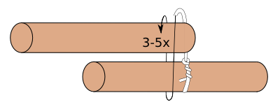

Der Bund wird mit einem Zimmermannsklang begonnen und einer Achterschlinge auf Zug geendet. Bringe 2 oder mehrere Längsbünde an der Verbindungsstelle an!
Das Seil ist immer unter Zug zu halten!
Anleitung Startknoten
Anleitung Endknoten